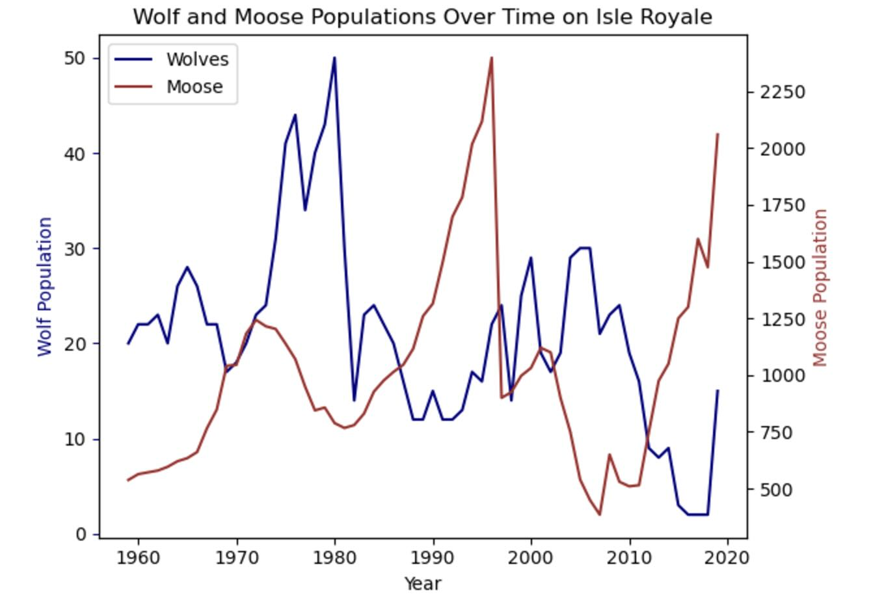

|

|
Population Trend
The graph shows us :
- The moose population increases first, providing more food for wolves. When the wolf population
(predator) grows due to abundant prey, they begin to overhunt moose, causing the moose
population to decline.
- The wolf population doesn’t immediately drop when the moose population declines. Instead, it
continues to grow for a short period due to momentum in reproduction. Eventually, the lack of
prey causes the wolf population to decline.
- When the wolf population falls, moose face less predation pressure and start to recover. We
expect that cycle to repeat. The model suggests a stable predator-prey dynamic with both
populations cycling without leading to the extinction of either species (within the given time
frame).
- The dynamic can be influenced by factors such as genetic health, disease, and climate change,
which can alter cyclic amplitude and frequency.
|